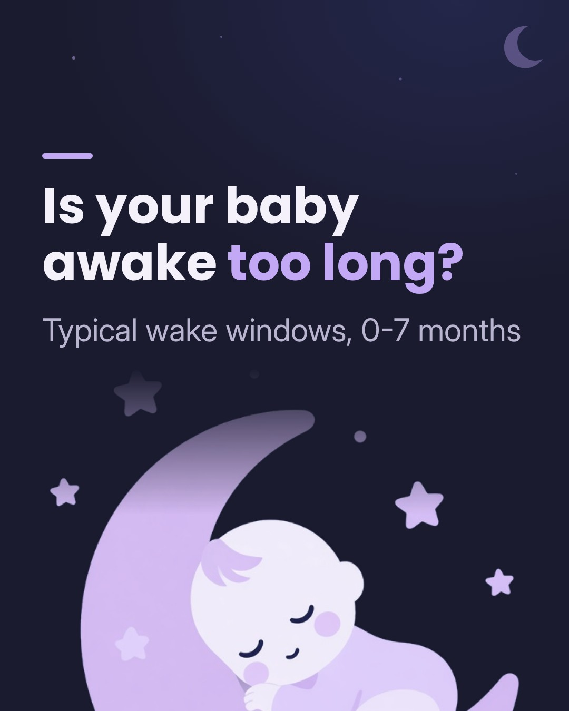
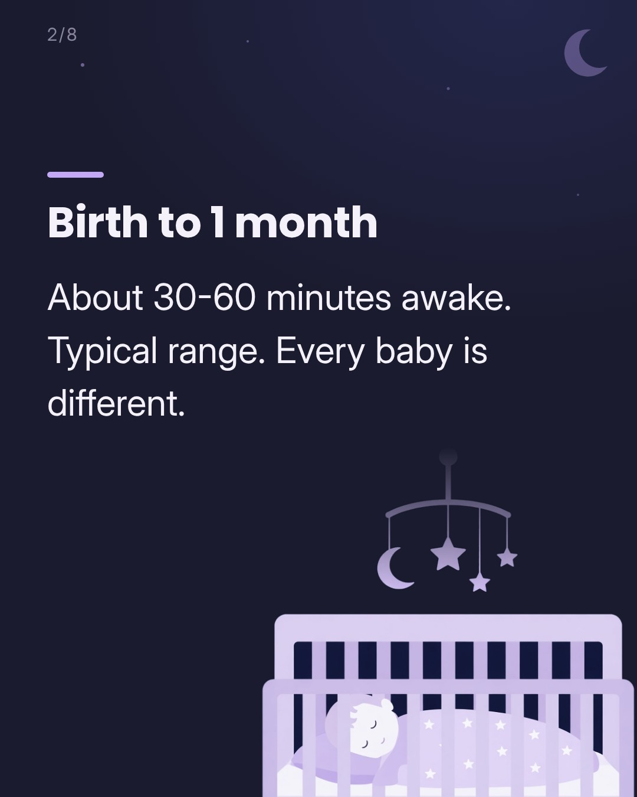
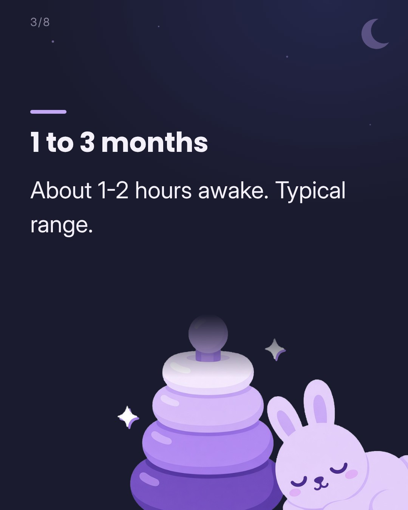
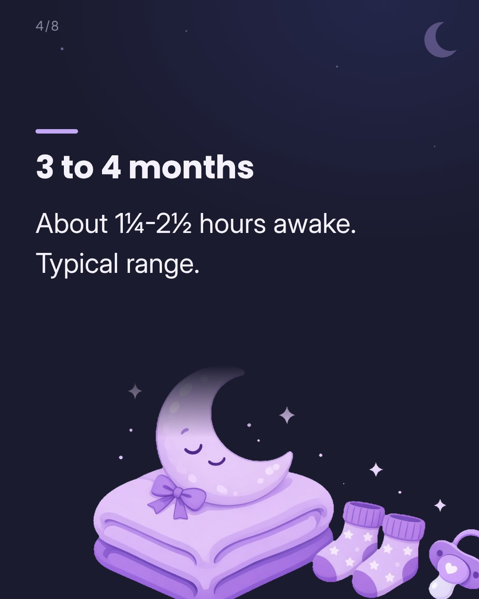
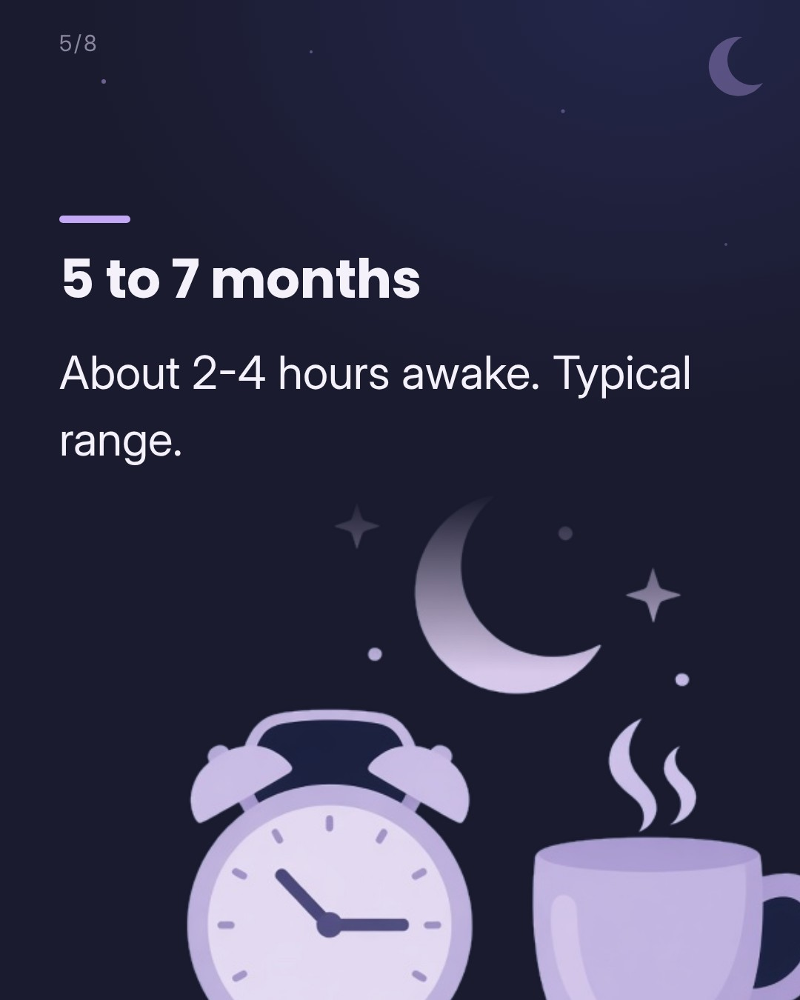
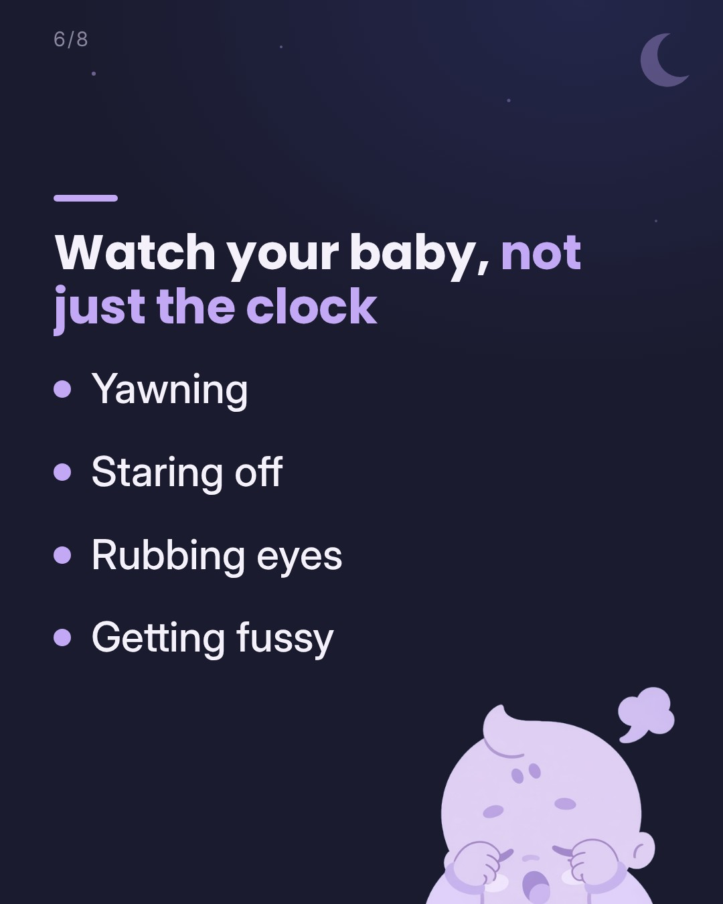
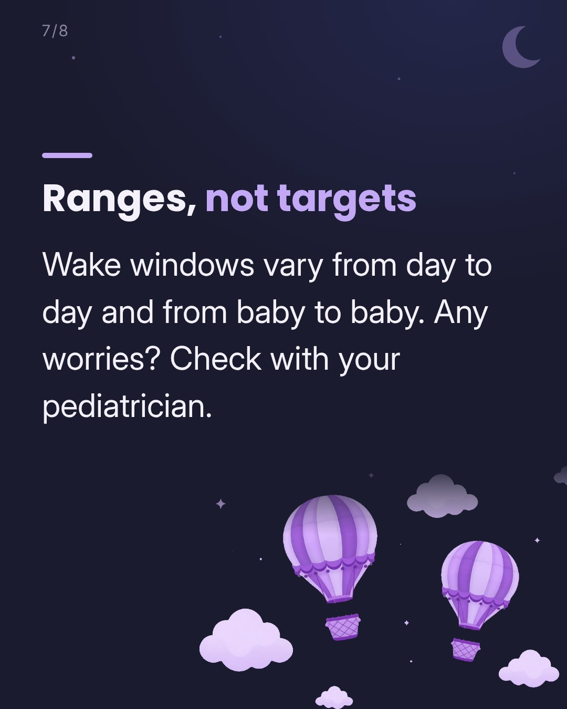
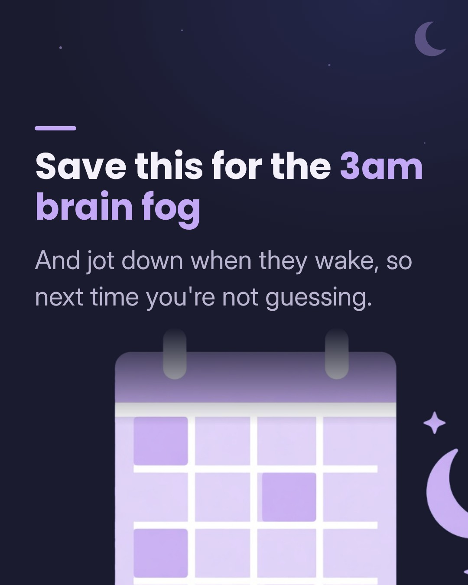

Caption
Is your baby awake too long? Here are typical wake windows from birth to 7 months 🌙 Wake windows are the stretches your baby is awake between sleeps, and they get longer as babies grow. These are typical ranges, not a schedule to hit. Every baby is different, and sleepy cues (yawning, staring off, rubbing eyes) count for more than the clock. Save this for the next 3am wake-up 🤍 Want to stop guessing? Log naps in one tap. Napapp, link in bio. Sources: Cleveland Clinic (wake windows); total sleep: AAP-endorsed AASM guidance. Not medical advice. Check with your pediatrician about your baby's sleep.
#wakewindows #babysleep #newbornsleep #newmom #babysleeptips
Sound
Instagram / Facebook picks
- My Own Universe · PattiJ NorthLight, curious mood for the 'Is your baby awake too long?' question hook [light, dreamy track by an independent artist, so likely usable on a business account; rising on CreatorDB, few posts so far]
- Autumn Journey · Andrea VanzoSoft piano for a saveable reference card [independent piano instrumental, so likely usable on a business account; rising on CreatorDB (week of Oct 28)]
- Evergreen · Richy Mitch & the Coal MinersWarm acoustic option with the biggest reach [independent folk band; it may be available on a business account; #2 on Tracygram global (Oct 29), 1.3M reels]
TikTok picks
No picks for this platform in Vira's list (see notes).
Notes: IG/FB carousel only, Oct 29 8:00 PM ET (awaiting approval; drop it if it already went out). TikTok was posted Oct 23, so no TikTok picks. Backup Meta sound: search the Meta Sound Collection (https://www.facebook.com/sound/collection/) in the picker for 'soft piano', 'lullaby' or 'nocturne'. Last resort: re-render with --track to use the CC0 Loyalty Freak track. Confirm every sound in the in-app picker on the business account before publishing (TikTok: Commercial Music Library; IG/FB: it shouldn't be greyed out or say 'unavailable for business'). Sounds are added in the app, and the reel.mp4 files are silent.
Picks as of Oct 29, 2026, 1:05 PM ET
Only use sounds cleared for business use: TikTok's Commercial sounds list, and on Instagram/Facebook a sound not flagged as unavailable for business accounts.
Happy with it? Go back to the calendar and tap Approve on this post.